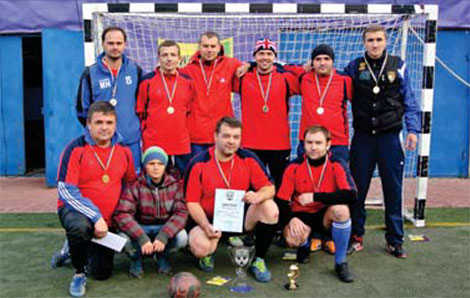

"ХТС" - ПОБЕДИТЕЛЬ II ЭТАПА "БИТВЫ КОРПОРАЦИЙ"
17-18 октября на полях детской академии ФК "Металлист" прошёл II этап спортивного турнира "Битва корпораций". В отличие от первого соревнования, которым был мини-гольф, на турнир по мини-футболу заявилось не 18, а 20 команд.
Накануне соревнований организаторы вместе с представителями каждой из команд провели жеребьевку и разделили соперников на 4 группы по 5 команд.
17 октября, начиная с 10:00, 20 команд сражались на 4 мини-футбольных полях за право выйти в раунд плей-офф. По регламенту, который был достаточно щадящим по отношению к участникам, 4 из 5 команд выходили из группы. В итоге, лишь четыре компании по итогам первого дня не смогли преодолеть групповой этап: "Компаньон Финанс", "Укрспецкомплект", "Центр доктора Бубновского" и "Life". Остальные же 16 соперников продолжили свой буть к финалу.
Клинушков Игорь, Проходов Сергей, Гриценко Сергей,
Воронов Артем, Ващенко Юрий,
Шиман Константин, Корнющенко Виталий, Репин Андрей,
Христенко Дмитрий.
В 1/8 финала наша команда без особого труда обы- грала представителей сети сендвич-баров "Fresh line" со счетом 5:1. На стадии четвертьфинала состоялся, пожалуй, самый сложный и интересный матч между командами "ХТС" и "Приватбанк". По мнению многих наших игроков - банкиры оказались самым крепким соперником, с которым приходилось встречаться на протяжении всего турнира. Победу с минимальным счетом одержала команда "ХТС". Более молодую и быструю команду "Приватбанка" удалось обыграть за счет опыта игры на контратаках, а также индивидуальных действий и мастерства известного голеадора Сергей Гриценко, который забил единственный, а по итогу - победный гол. Работники магазинов "Adidas" попались нам в полуфинале. Главным качеством этой команды являлась запредельная самоотдача, которая часто перерастала в грубость. Компактно обороняясь, соперник долго не давал нам действовать комбинационно в атаке. Взяв тайм-аут и обсудив план дальнейших действий, было решено - чаще брать на себя игру и стараться обыгрывать соперника один в один. К концу первого тайма стратегия принесла свои плоды, и мяч впервые побывал в воротах известного спортивного бренда. Во втором тайме, забив быстро второй гол, мы постарались больше контролировать мяч, иногда переходя на игру с пятым полевым, экономя силы перед финальной встречей. В концовке матча, даже про- пустив один гол, команда "ХТС" чувствовала себя уверенно и победила. Финал турнира прошел при большом количестве болельщиков и хорошей погоде.
До золотого матча дошли две команды: "ХТС" и "Альфабанк". Игроки "Харьковских тепловых сетей" провели финал так же уверенно, как и весь турнир в целом, обыграв соперника со счетом 7:2.
Третье место и бронзовые медали по достоинству завоевала команда "Укрнафта", которая в малом финале обыграла "Adidas".
Подводя итоги двух этапов, стоит отметить, что в обоих соревнованиях победы одержали команды коммунальных предприятий.